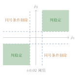

第十五章怎样识破一个“看起来很厉害”的因子？
15.1一个 0.08 的因子，第二天全崩了
我至今记得那个周二。 周一盘后，公式跑完，有一个因子的 RankIC 是 0.08。这个数值在 A 股截面上属于“高得不像话”——按第 十四 章那张体检表的刻度，\(|\RankIC| = 0.04\) 就已经算满分系统源码internal/tools/factor_review_tool.go 的 factorQualityFromItem：absIC/0.04 封顶。核对时间 2026-09-24。1。0.08 是它的两倍。
我当时的反应是把它加进权重，第二天按它选了一遍股票。
周三收盘，那一批股票的表现是全市场后半段。
我第一反应是“市场变了”。于是我回去看这个因子在更长时间窗口上的表现——它不像是一个坏因子，它在过去三个月里大概七成的时间都为正。这让我更困惑：一个七成时间为正的因子，为什么偏偏在我相信它的那一天失效？
那天晚上我才想到一个更要紧的可能：也许它没有失效，只是我从一开始就高估了它。
我用的评价办法是这样的：把最近一段时间每天的 IC 算出来，取平均，看这个平均值。这个办法的问题是，它把一件有三个维度的事压成了一个数——第 十四 章结尾我提过一次，但它值得单独用一整章来讲，因为这一步是整条因子流水线上最容易被自己骗过去的地方。
我需要的不是更好的因子，是一个能说出“不行”的检验。
15.2把全班分成两半
假设我要选一个“全班最会做题的人”，但我手上只有一次测验的排名。
我做了一件事：把全班同学按学号奇偶分成两组（A 组和 B 组），然后看 ——
如果两组排出来的“前三名”是同一批人，那这个排名有共同的原因，它大概是真本事。
如果 A 组的第一名在 B 组排到第三十，B 组的第一名在 A 组排到第二十五，那么“第一名”这个称号就是抽签抽出来的。不是那个同学不行，而是那次测验量到的全是噪声。
关键就在这里：我并没有增加任何数据，我只是把同一批数据切成两半，然后问它们会不会说同一种话。
还有一个细节非常重要：分组不能由我“看着办”。如果我知道谁成绩好，我就可能不自觉地把他分到同一组去。所以分组必须是我事先定好、事后不能改的——一个固定的规则，一个固定的随机种子。
这就是本章全部的技术核心：用一个固定的规则，把样本撕成两半，看两半段会不会说同一种话。
15.3不留“反对席”，检验就变成表彰
在讲做法之前，我得先说清不这么做的代价，否则没人愿意多跑一遍计算。 代价一：你会把一个巧合写进权重。 第 十三 章讲过，因子质量分会通过 \(\clamp(q/q_{\text{med}},0.5,1.5)\) 影响次日选股的权重。这条链是闭环的：一个因子在昨天看起来好，它明天就自动占更大的权重。如果这个“看起来好”是一次巧合，那么闭环会自动把错误放大——你没有任何一步会拦住它。 代价二：你会以为自己在做研究，其实在做筛选。 这是我最想纠正的一个自我认知。我在两千多只股票、二十来个时间窗口上反复看同一个因子，总会找到一个窗口里它表现很好。然后我把那个窗口的结果记下来，说“你看，它有效”。 这不是研究，这是筛选。我试了多少次，我从来没数过。 代价三：你会失去“承认不确定”的能力。 真正让我警觉的是一件很小的事：我发现我从来没有办法在报告里写“这个因子我判断不了”。报告里要么写“有效”，要么写“无效”。而现实中大量因子的真实状态是“信息不足，无法判断”。如果这句话不许说，那么所有“信息不足”都会被逼成“有效”或者“无效”这两个假答案。 所以系统的做法里有一条我特别看重：样本不够时不下结论，而不是下个结论再打折。15.4分半检验：从朴素版本到严谨版本
先用一句话说清朴素版本：把当天的截面样本随机分成两半，两半各算一个 RankIC；两个数方向一致、且都不太小，就判“稳定”。 朴素版本是对的，但它有三处需要严谨化，否则它只是把主观判断换成了另一种主观判断：怎么分才算随机？“都不太小”是多小？判错的概率有多大？15.4.1怎么分：固定种子的交替分配
先说“怎么分”。系统的实现可以完整写成一段流程。定义 15.1（分半划分）
设当天的截面样本按输入顺序编号为 \(s_1,\dots,s_n\)。取固定种子 \(\mathrm{seed}=20240701\)，由一个伪随机数发生器生成 \(\{1,\dots,n\}\) 的一个排列 \(\pi=(\pi_1,\dots,\pi_n)\)。定义
\[A=\bigl\{\,s_{\pi_1},s_{\pi_3},s_{\pi_5},\dots\bigr\},\qquad
B=\bigl\{\,s_{\pi_2},s_{\pi_4},s_{\pi_6},\dots\bigr\}, \tag{15.1}\]
即按排列后的次序“隔一个分一个”。于是
\[\abs{A}=\Bigl\lceil \tfrac{n}{2}\Bigr\rceil,\qquad \abs{B}=\Bigl\lfloor \tfrac{n}{2}\Bigr\rfloor, \tag{15.2}\]
两半段样本量最多相差 1。
internal/tools/factor_review_tool.go 的 splitHalfStability：rand.New(rand.NewSource(20240701)).Perm(n) 后按 i mod 2 == 0 分流。核对时间 2026-09-24。2。
这里有一个必须讲清的“矛盾”：既然是固定种子，那它到底算不算随机？
算，也不算。准确地说是：它对同一次输入是确定的，对不同的样本编号顺序是随机的。
命题 15.2（固定种子交替分配的可复现性与无偏性）
在 定义 15.1 的记号下：
(i)（确定性） 对固定的 \(n\)、固定的种子与固定的输入顺序，划分 \(A,B\) 是一个确定的结果：用同样的输入重跑，得到同样的两半。因此该检验可复现。
(ii)（交换性） 设样本的属性 \(X(s)\) 只依赖于样本自身的取值，与它在输入中的编号无关（假设 15.3）。若把输入顺序看作一个均匀随机的排列，则
\[\E\bigl[X_A\bigr]=\E\bigl[X_B\bigr], \tag{15.3}\]
其中 \(X_A\)、\(X_B\) 分别表示 A 半、B 半上属性 \(X\) 的（同一口径的）统计量。
假设 15.3
样本在输入序列中的编号顺序，与样本的属性 \(X\) 独立——换句话说，编号顺序里不含信息。
证明■
(i) 由随机数发生器的定义，NewSource(20240701) 产生的是一个确定的比特流；Perm(n) 是这条流的一个确定的函数。因此 \(\pi\) 是输入长度 \(n\) 的确定函数，式 (15.1) 给出的 \(A,B\) 也是 \((n,\text{输入顺序})\) 的确定函数。同一输入 \(\Rightarrow\) 同一划分。
(ii) 记 \(T\) 为输入顺序所对应的排列（把“第 \(i\) 个位置上是哪个样本”读成一个双射）。\(\pi\) 是种子与 \(n\) 的函数，与 \(T\) 独立。设 \(\tau\) 为交换位置 1 与 2 的对换，考虑映射
\[\varphi:\ \pi\ \longmapsto\ \pi\circ\tau . \tag{15.4}\]
因为对换 \(\tau\) 是双射，\(\varphi\) 是 \(\{1,\dots,n\}\) 上全部排列之集到自身的一个双射；又因 \(\pi\) 在假设下均匀分布，\(\varphi\) 保持均匀性，即 \(\pi\circ\tau\) 与 \(\pi\) 同分布。
现在看这个映射对划分做了什么。\(\pi\circ\tau\) 就是把 \(\pi\) 的第 1 位与第 2 位交换，其余不动。而 式 (15.1) 是按位置奇偶分流，交换第 1、2 位的结果正是把 \(s_{\pi_1}\) 从 A 挪到 B、把 \(s_{\pi_2}\) 从 B 挪到 A，其余样本不动。因此若记
\[F(\pi)=\bigl(X_A(\pi),\ X_B(\pi)\bigr)\in\R^2, \tag{15.5}\]
则 \(F(\pi\circ\tau)=\bigl(X_B(\pi),X_A(\pi)\bigr)\)，也就是把两个分量对调。
由于 \(\pi\circ\tau\) 与 \(\pi\) 同分布，随机向量 \(F(\pi)\) 与 \(\bigl(X_B,X_A\bigr)\) 同分布，即 \((X_A,X_B)\) 与 \((X_B,X_A)\) 同分布（交换性）。对同分布的对称向量取期望，两个分量必然相等：
\[\E[X_A]=\E[X_B]. \qquad \tag{15.6}\]
注 15.4（两条边界，必须写清）
第一，命题 15.2 的(ii)完全依赖假设 15.3。如果输入顺序本身携带信息——例如样本是“按股票代码字典序”排列的切片——那么固定种子就等价于一个固定的、隔一个取一个的抽样。这种抽样一旦与板块或代码段相关，两半就不再可比。这不是理论洁癖：这个项目真实发生过一次“按代码字典序取 300 只，结果样本几乎全落在北交所”的事故系统事实清单第 15 节第 4 条：旧版市场广度按 ORDER BY symbol LIMIT 300 字典序截断，样本几乎全落在北交所与沪 600。3。所以样本顺序这件事，在统计上和在工程上都要单独盯。
第二，命题里说的是“期望相等”，不是“样本量完全相等”或“方差相等”。两半的样本量由 式 (15.1) 保证最多差 1，但它们的方差并不相同，这在下一个小节会成为一个具体的数字问题。
15.4.2判据，与它判错的概率
判据本身很短。系统里的规则是一行：\[\text{判“稳定”}\iff
\sign(\hat\rho_1)=\sign(\hat\rho_2)\ \text{且}\ \abs{\hat\rho_1}\ge 0.02\ \text{且}\ \abs{\hat\rho_2}\ge 0.02, \tag{15.7}\]
其中 \(\hat\rho_1,\hat\rho_2\) 是 A、B 两半段各自算出的 RankIC系统源码 internal/tools/factor_review_tool.go：const minStrength = 0.02，判定式为 math.Signbit(ic1)==math.Signbit(ic2) && math.Abs(ic1)>=minStrength && math.Abs(ic2)>=minStrength。核对时间 2026-09-24。4。
三个条件缺一不可。方向必须一致（同号），强度必须各段达标（\(0.02\)）。系统把这两半段的 IC 原样存进 SplitHalfIC 字段，格式是 "ic1/ic2"：用 fmt.Sprintf 把两半段 IC 各保留四位小数、中间以斜杠连接系统源码 internal/tools/factor_review_tool.go 的 buildFactorItem 中由 halfICKey 拼接两个四位小数的 IC。核对时间 2026-09-24。5，方便日后审计。
那么问题来了：如果这个因子根本无效，它有多大概率被判成“稳定”？
要回答这个问题，我需要把“无效”变成一个可以计算的假设。
假设 15.5
(i)（无效原假设）该因子真实无效，即母体秩相关为 \(\rho=0\)。
(ii)（渐近正态）两半段的估计量 \(\hat\rho_1,\hat\rho_2\) 在 \(\rho=0\) 下近似服从均值为 \(0\)、方差为 \(1/(m-1)\) 的正态分布，其中 \(m\) 为每半段的样本量。
(iii)（独立）两半段的样本互不重叠，故 \(\hat\rho_1\) 与 \(\hat\rho_2\) 相互独立。
定理 15.6（分半检验的假阳性概率上界）
在假设 15.5 下，记
\[c = 0.02\sqrt{m-1}, \tag{15.8}\]
则判据 式 (15.7) 误判“稳定”的概率满足
\[\Prob(\text{误判}) = 2\bigl(1-\Phi(c)\bigr)^2 \;\le\; 4\bigl(1-\Phi(c)\bigr)^2, \tag{15.9}\]
其中 \(\Phi\) 是标准正态分布函数。进一步，用尾部不等式 \(1-\Phi(c)\le \varphi(c)/c\)（\(c>0\)，\(\varphi\) 为标准正态密度）还可给出
\[\Prob(\text{误判}) \;\le\; 4\,\frac{\varphi(c)^2}{c^2}. \tag{15.10}\]
证明■
先把单半段的越阈概率算出来。由假设 15.5(ii)，\(\hat\rho_j\) 的标准差是 \(1/\sqrt{m-1}\)，直接把它标准化，令
\[Z_j=\hat\rho_j\sqrt{m-1},\qquad j=1,2 . \tag{15.11}\]
由 (ii)，\(Z_j\) 近似服从 \(N(0,1)\)。于是 \(\abs{\hat\rho_j}\ge 0.02\) 等价于 \(\abs{Z_j}\ge 0.02\sqrt{m-1}=c\)。由标准正态的对称性，
\[\Prob\bigl(\abs{\hat\rho_j}\ge 0.02\bigr)
=\Prob\bigl(\abs{Z_j}\ge c\bigr)
=2\bigl(1-\Phi(c)\bigr). \tag{15.12}\]
第一步，在同号条件下把两个半段合起来。要把一个事件分解成互斥的几块，才能各自用独立性相乘。判“稳定”这个事件可以拆成两块：
\[\{\text{同号且都超阈}\}
=\underbrace{\{\hat\rho_1\ge 0.02,\ \hat\rho_2\ge 0.02\}}_{\text{两部分正}}
\ \cup\
\underbrace{\{\hat\rho_1\le -0.02,\ \hat\rho_2\le -0.02\}}_{\text{两部分负}}, \tag{15.13}\]
两块互斥。由假设 15.5(iii)（独立）与 式 (15.12)，
\begin{align}\Prob(\text{两部分正})
&= \Prob(\hat\rho_1\ge 0.02)\,\Prob(\hat\rho_2\ge 0.02)
= \bigl(1-\Phi(c)\bigr)^2, \tag{15.14}\\
\Prob(\text{两部分负})
&= \Prob(\hat\rho_1\le -0.02)\,\Prob(\hat\rho_2\le -0.02)
= \bigl(1-\Phi(c)\bigr)^2, \tag{15.15}\end{align}
其中两处都用了“正态分布对称于是 \(\Prob(Z\ge c)=\Prob(Z\le -c)=1-\Phi(c)\)”。相加得
\[\Prob(\text{误判})=2\bigl(1-\Phi(c)\bigr)^2 . \tag{15.16}\]
第二步，放宽成 式 (15.9)。由 \(1-\Phi(c)\le 1\)（分布函数的取值不超过 1）立得
\[2\bigl(1-\Phi(c)\bigr)^2 \le 4\bigl(1-\Phi(c)\bigr)^2 . \tag{15.17}\]
第三步，算出 Mills 型上界。对 \(c>0\)，
\[1-\Phi(c)=\int_c^{\infty}\varphi(z)\,dz
\le \int_c^{\infty}\frac{z}{c}\,\varphi(z)\,dz
=\frac{1}{c}\int_c^{\infty}\bigl(-\varphi'(z)\bigr)\,dz
=\frac{\varphi(c)}{c}, \tag{15.18}\]
其中第一个不等号用了 \(z\ge c\) 内的被积变量满足 \(z/c\ge 1\) 且 \(\varphi(z)>0\)，最后一个等号用了 \(\varphi'(z)=-z\varphi(z)\)（与第 十四 章引理 14.7 同一个恒等式）。把它代入 式 (15.9) 即得 式 (15.10)。
推论 15.7（两个样本量下的实际数值）
取 \(t=0.02\)，分别代入 \(n=60\)（每半 \(m=30\)）与 \(n=400\)（每半 \(m=200\)）。
\(n=60\)： \(\sqrt{m-1}=\sqrt{29}=5.38516\)，故 \(c=0.02\times 5.38516=0.10770\)；由标准正态表（或级数 \(\Phi(z)\approx 0.5+0.39894z-0.06649z^3\) 在 \(z=0.1077\) 处的值）得 \(\Phi(0.10770)=0.54288\)，故 \(1-\Phi(c)=0.45712\)，
\[\Prob(\text{误判})=2\times 0.45712^2=0.41791,\qquad
4\bigl(1-\Phi(c)\bigr)^2=0.83582 . \tag{15.19}\]
\(n=400\)： \(\sqrt{m-1}=\sqrt{199}=14.10674\)，故 \(c=0.02\times 14.10674=0.28213\)；\(\Phi(0.28213)=0.61106\)，故 \(1-\Phi(c)=0.38894\)，
\[\Prob(\text{误判})=2\times 0.38894^2=0.30254,\qquad
4\bigl(1-\Phi(c)\bigr)^2=0.60509 . \tag{15.20}\]
| 总样本 \(n\) | 每半 \(m\) | \(\bm{c}\) | \(\bm{1-\Phi(c)}\) | 同号版 \(2(\cdot)^2\) | 放宽版 \(4(\cdot)^2\) |
| 60 | 30 | 0.1077 | 0.4571 | 0.4179 | 0.8358 |
| 400 | 200 | 0.2821 | 0.3889 | 0.3025 | 0.6051 |
表内数值不是系统数据，而是本章按 式 (15.9) 与 式 (15.12) 直接代入 \(\Phi\) 的函数值算出的结果，算式已全部写在 推论 15.7 中。
本章按 定理 15.6 的公式计算；\(m\) 取 \(\lfloor n/2\rfloor\)；核对时间 2026-09-24。
\[\Prob(\text{两半都超阈})=\bigl[2(1-\Phi(c))\bigr]^2=4\bigl(1-\Phi(c)\bigr)^2, \tag{15.21}\]
而加了同号条件只保留其中两块，于是
\[\frac{\Prob(\text{同号且都超阈})}{\Prob(\text{都超阈})}
=\frac{2(1-\Phi(c))^2}{4(1-\Phi(c))^2}=\frac{1}{2}. \tag{15.22}\]
这不是巧合，是因为在原假设下 \(\hat\rho\) 的符号是左右对称的，四个象限各占一份——要求“两半段说同一个方向”，等于把一半的偶然一致直接排除掉。
第二件：\(0.02\) 这个阈值的作用不是“筛强”，而是“筛方向”。
它低到几乎不筛强度（\(n=60\) 时越阈概率高达 \(0.914\)），它真正排除的是那些“一半为正一半为负”的因子——那种因子的信号连方向都不确定。要让阈值真正起到“筛强度”的作用，样本量必须大得多：看比值 \(t/(1/\sqrt{m-1})=0.02\sqrt{m-1}=c\)，从 \(m=30\) 时的 \(0.108\) 涨到 \(m=200\) 时的 \(0.282\)，阈值才逐渐站出来。
注 15.8（Mills 上界在这里为什么是空的）
式 (15.10) 给的是一个“不含 \(\Phi\)、只用密度就能算”的上界。把它代入上面两个数：\(c=0.1077\) 时 \(\varphi(c)=0.39663\)，\(\varphi(c)/c=3.6826\)，于是 \(4\varphi(c)^2/c^2=54.3\)；\(c=0.2821\) 时 \(\varphi(c)=0.38337\)，\(\varphi(c)/c=1.3588\)，于是 \(4\varphi(c)^2/c^2=7.39\)。两个都大于 1，也就是说这条上界在概率的意义上什么也没说。
要让它有意义，需要 \(\dfrac{2\varphi(c)}{c}\le 1\)，即 \(c\ge 0.65\)。在阈值固定为 \(0.02\) 时，这等价于 \(\sqrt{m-1}\ge 32.2\)，也就是每半段样本量要在 \(1000\) 以上。
我把这个失败的推导也写进来，是因为它比成功的推导更能说明问题：\(0.02\) 这个门槛低到连一个非平凡的理论上界都撑不起来。它的价值在于“方向一致性”和“给权重侧一个诚实下线的开关”，而不在于它自己有多强的判别力。

15.4.3诚实下线：同一个判断，两把尺子
判“不稳定”之后怎么办，才是这一章真正的重点。因为“发现它不稳”这件事本身不改变任何行为——一个不影响次日参数的检验，等于没有检验（这句话在第 三十二 章还会再出现一次）。 系统里给“不稳定”准备了两道下线，都在internal/cio/cio.go 与 internal/tools/factor_review_tool.go 中：
下线一（质量分侧）：IC 贡献减半。在 factorQualityFromItem 里，IC 那一项的权重本来是 \(0.35\)；如果分半判定不稳定，且总样本量达到 30，就把这一项乘 \(0.5\)，变成 \(0.175\)系统源码 internal/tools/factor_review_tool.go 的 factorQualityFromItem：if !halfStable && sampleCount >= 30 { icScore *= 0.5 }。核对时间 2026-09-24。6。
下线二（权重侧）：先封顶，再砍半。在 factorWeightsFor 里，如果这个因子被“真实判定”为不稳定，那么先把它本来的自适应倍数 \(\mathrm{mult}\) 封顶到 \(0.6\)，再乘 \(0.5\)：
\[\mathrm{mult} \leftarrow \min\bigl(\mathrm{mult},\,0.6\bigr)\times 0.5 \;\le\; 0.6\times 0.5 = 0.3 . \tag{15.23}\]
也就是说，一个被判定不稳定的因子，次日最多只能拿到默认权重的三成系统源码 internal/cio/cio.go 的 factorWeightsFor：mult = math.Min(mult, 0.6) 紧接 mult *= 0.5。核对时间 2026-09-24。7。
为什么要“先封顶再砍半”，而不是直接乘 \(0.5\)？因为 \(\mathrm{mult}\) 本身已经有 \([0.5,1.5]\) 的区间。如果直接乘 \(0.5\)，一个质量分影像特别好的因子会拿到 \(1.5\times 0.5=0.75\)——这仍然不小，“不稳定”三个字就白说了。先封顶到 \(0.6\) 再砍半，保证结果不超过 \(0.3\)，与“它可能只是一次巧合”这个判断相称。
两道下线共用的前提：不能“无中生有地判不稳定”。样本不足时，两半段的 IC 主要是噪声，“不稳定”这个结论本身不可靠。系统为此设了两道样本下限：
- \(n<8\)：直接返回“不稳定”，且不返回两半段 IC。这时
SplitHalfIC是空字符串系统源码internal/tools/factor_review_tool.go的splitHalfStability：if n < 8 { return nil, false }；以及if len(sc1) < 3 || len(sc2) < 3 { return nil, false }。8。 - 总样本 \(<30\)：视为“无法判定”。质量分侧因此不减半——注释写得很清楚：“样本不足的因子其覆盖率/IC 本来就极低，已被 covScore/icScore 自然压低，无需额外减半”。
SplitHalfIC 为空，后者 SplitHalfIC 是 "ic1/ic2" 这样的两个数。
注 15.9（两把尺子的口径差异）
这里有一处我在读代码时反复确认过的细节，值得写下来，因为它会真实影响权重。
质量分侧的下线用的是“总样本 \(\ge 30\)”这个门槛；权重侧的下线用的是“SplitHalfIC 非空”这个门槛（即 \(n\ge 8\)）。于是在 \(8\le n<30\) 这个区间里，两个门槛给出的答案不一样：质量分那一项没有被减半，但次日权重照样被砍到不超过 \(0.3\)。
这不是错误，是两个层次的设计选择（质量分关心“这个数准不准”，权重关心“要不要把风险降下来”），但你在读一个因子的实际权重时必须知道：它可能不是被质量分压低的，而是被权重侧的二次降权压低的。两条路径的出处分别在 factorQualityFromItem 与 factorWeightsFor。
15.5它在系统里长什么样
把上面所有内容对到代码上，只有几个名字。 检验函数：splitHalfStability(samples []fSample) (halfIC []float64, stable bool)。它返回两半段的 IC（一个长度 2 的切片）与一个布尔判定。实现里有一处工程细节我特别欣赏：种子是写死在函数体内的字面量 \(20240701\)，不是从配置里读的系统源码 internal/tools/factor_review_tool.go：rand.New(rand.NewSource(20240701))。核对时间 2026-09-24。9。这意味着任何人、任何时间、在任何机器上，对同一批样本都会得到同一个划分——审计才有可能。
落库字段：FactorQuality 表的 SplitHalfStable（布尔）与 SplitHalfIC（形如 "0.0312/-0.0104" 的文本）。再加上 Detail 里那一段 half=...\(\checkmark\)稳定 的标记，一共三处记录了这次检验系统源码 internal/tools/factor_review_tool.go 的 persistFactorQuality 与 stableMark。核对时间 2026-09-24。10。为什么要记三遍？因为这三个字段的读者不同：SplitHalfStable 给程序读，SplitHalfIC 给权重侧的守卫条件读，Detail 给人读。
参考基准：medianFactorQuality。“好因子上调、差因子下调”总得有个基准线，系统用的是中位数而不是均值系统源码 internal/cio/cio.go 的 medianFactorQuality：排序后取中位，偶数个取中间两个的平均；空映射返回 0。核对时间 2026-09-24。11。原因和第 十三 章讲过的一致，但在这里更锋利：如果基准用均值，那么一个被诚实下线、质量分被打到很低的不稳定因子，会拉低均值，从而让其他因子的倍数被动上调——一次惩罚变成了对所有因子的奖励。
mult := 1.0
if q, ok := qmap[name]; ok && meanQ > 0 && q > 0 {
mult = clampF(q/meanQ, 0.5, 1.5)
// 仅当分半检验「真实可判定」且判定为不稳定(false)时才强力降权
// （先封顶 0.6 再砍半 → 总倍数 <= 0.3）
if h, okH := half[name]; okH && !h.stable && h.ic != "" {
mult = math.Min(mult, 0.6)
mult *= 0.5
}
}h.ic != "" 这个判断就是“分半是否真实可判定”的开关。它让“样本不足、无法判定”的因子免于被降权——这正是本章最重要的一条设计原则落到了代码上。
还有一条链要说清，否则读者会以为这套检验只是“多存了几个字段”。它其实是三环相扣的：
splitHalfStability算出stable与两半段 IC；factorQualityFromItem用stable决定 IC 贡献是否减半，得到 \([0,1]\) 的质量分；factorWeightsFor用落库后的SplitHalfStable与SplitHalfIC决定次日权重倍数是否被砍到 \(\le 0.3\)。
15.6常见误解与纠偏
这是对过拟合最流行、也最误导人的一种理解。
真正的过拟合不是“参数多”，而是你没有给反对证据留位置。一个只有三个参数、但我试了两千种组合、并且只保留最好的那一种的策略，比一个二十个参数、但从不回头看结果的策略更容易过拟合。
判据很简单：在得到这个结论之前，我有没有一个会被这个结论打败的检验？如果不管结果怎样，我的结论都不会变，那我不是在做研究，我是在做确认。
分半检验之所以放在这一章，就是为了给“反对证据”安排一个固定席位。它有一个事先定好的、不许改的分组规则（种子 \(20240701\)），和一条事先定好的判据（式 (15.7)）。“事先”两个字是它全部的价值来源。
我一开始真的是这么想的：算不出结论就写“数据不足”，这不是把责任推给数据吗？
后来我算清 推论 15.7 里那两行数，才明白过来：在 \(n=60\) 的规模上，判据 式 (15.7) 对一个无效因子的假阳性上界是 \(0.42\)；在 \(n=\text{8}\) 的规模上，这个上界会更接近 1。在信息不足的时候逼出一个结论，得到的一定是假结论。
所以“样本不足就不下结论”不是偷懒，是统计诚实：它把“我不确定”这件事保留下来，而不是用一个看起来像答案的数字把它盖住。系统里那个
h.ic != "" 的判断，写的正是这句话。
这条原则全书通用。第 十九 章会看到同一件事的另一种形态：六维判势的样本数不足 100 时，必须在 sources 里标注低可信度，而不是悄悄给一个正常分数。
这是我在第一次上线它之后担心的事：如果检验太严，是不是所有因子都会被降权？
算完数就知道这个担心把方向搞反了。真正的机制是相对的：\(\mathrm{mult}\) 是质量分除以中位数。当所有因子都被同等下调时，归一化那一步（把权重总和缩回默认总和）会把它们整体还原——相对排序几乎不变。
所以诚实的问法不是“它会不会惩罚因子”，而是“它会不会改变因子的相对排序”。答案是会，而且这正是我们要的：一个稳定、覆盖广、衰减正常的因子，会相对那些“看起来很好但两半段说不到一起”的因子占更大的权重。
15.7真实出处
- 分半稳定性检验（固定种子 \(20240701\)、交替分配、数量均衡、\(\abs{\IC}\ge 0.02\) 阈值、\(n<8\) 直接判不稳定）：
internal/tools/factor_review_tool.go的splitHalfStability - 两半段 IC 的格式化与落库：同文件的
buildFactorItem（split_half_ic）、persistFactorQuality、stableMark - 质量分侧的诚实下线（IC 贡献减半，门槛 \(n\ge 30\)）：同文件的
factorQualityFromItem - 权重侧的诚实下线（先封顶 \(0.6\) 再 \(\times 0.5\)，门槛
SplitHalfIC非空）：internal/cio/cio.go的factorWeightsFor - 中位数参考基准：同文件的
medianFactorQuality - 落库表与字段：SQLite
FactorQuality（SplitHalfStable、SplitHalfIC、Quality、Detail）
动手试一试（十五分钟）
- 查 SQLite 的
FactorQuality表，只取两列：FactorName与SplitHalfIC。 - 分类数一下：有几行的
SplitHalfIC是空字符串（无法判定），有几行是"ic1/ic2"这种带斜杠的文本（真实判定）。 - 在带斜杠的那些行里，找出两个数符号相反的行。这些就是判不出来方向的因子——它们的
SplitHalfStable应当是 false，去看看是不是。 - 拿两个数都为正、且都大于 \(0.02\) 的行，算一下
SplitHalfStable是不是 true。如果不是，你要检查一下自己的判断和代码里的判据 式 (15.7) 是不是同一句话。 - 最后做一个“反实验”：把 推论 15.7 里 \(n=400\) 那一行重新手算一遍，验证 \(c=0.02\sqrt{199}\) 确实落在 \(0.282\) 附近。